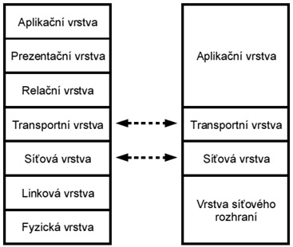

Model ISO/OSI
Fyzická vrstva
Umožňuje přenos jednotlivých bitů komunikačním kanálem bez ohledu na jejich význam. Ve fyzické vrstvě jde o definici fyzických signálů používaných na reprezentaci log 1 a log 0. Vrstva předepisuje i vlastnosti přenosového média, charakteristiky signálu, rychlost přenosu, tvary konektorů, … (na této vrstvě pracuje Repeater, hub).
Linková vrstva
Úkolem vrstvy je zajistit bezchybný přenos dat mezi přímo propojenými (sousedními) stanicemi. Vytváří rámce (frames), které obsahují mimo vlastních přenášených informací i údaje pro adresování a zabezpečení proti chybám přenosu a údaj pro rozpoznání začátku rámce. Přidá tedy (v sítích TCP/IP, Ethernet) před paket preamble (synchronizační pole, 7B), příznak začátku rámce (1B), adresu cílovou (6B), adresu zdrojovou (6B), délku paketu (2B). Potom následuje vlastní paket a za ním kontrolní součet (CRC – cyclic redundanci check) – na této vrtvě pracuje Bridge, switch.
Síťová vrstva
Zajišťuje adresování a směrování dat v síti od zdroje k cíli přes několik mezilehlých prvků. Přenosová cesta se buď dynamicky mění při průchodu paketů Každá vrstva komunikuje jen se sousedními jednotlivými prvky sítě (datagramová služba - nespojově), nebo se na začátku spojení nejprve vytvoří virtuální cesta (spojově orientovaná cesta) – na této vrstvě pracuje Router.
Transportní vrstva
Zajišťuje vlastní přenos dat. Přijímá data z relační vrstvy, rozkládá je na pakety (nejmenší ucelená jednotka přenášených dat) a přenese paket při každém přístupu na síťovou vrstvu. Zabezpečuje, aby se celá zpráva dostala k příjemci správně. Zajišťuje tedy i opakování zprávy v případě chyby a její opětovné sestavení po přenosu.
Relační vrstva
Ůkolem této vrstvy je navázání relací mezi koncovými stanicemi. Zajišťuje tedy práva, hesla, omezení, … .
Prezentační vrstva
Tato vrstva převádí formát dat do universální podoby přístupné pro celou síť. Zajišťuje např. způsoby kódování, komprimace, kryptografie a po přenosu zajišťuje zpětný převod. (dává jim význam – smysl).
Aplikační vrstva
Je to sedmá nejvyšší vrstva architektury. Vrstva tvoří rozhraní k vlastnímu programu a je představována např. aplikacemi FTP, Telnet, SMTP, SNMP, …(na této vrstvě pracuje Gateway).